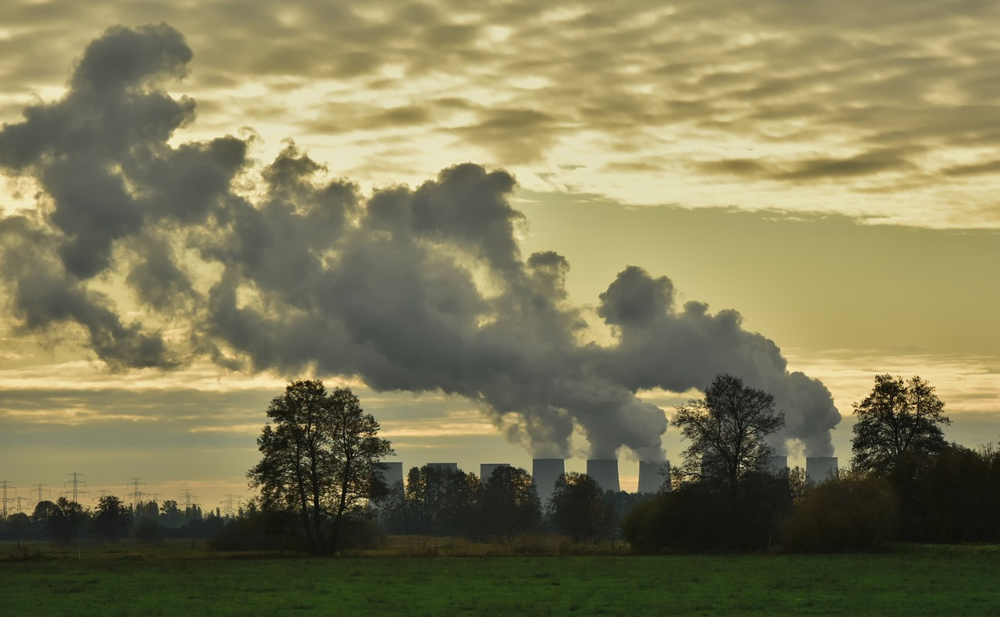

Coal-fired power plant by Pixabay
Climate Change Policy in the Long-term
In the paper written by Kenneth Gillingham and James H. Stock, The Cost of Reducing Greenhouse Gas Emissions, they come to the conclusion that climate change is a long-term problem which requires long-term policy solutions. To achieve these goals, those in power today will need to navigate carefully as they mainly focus on low-cost, short-term solutions.